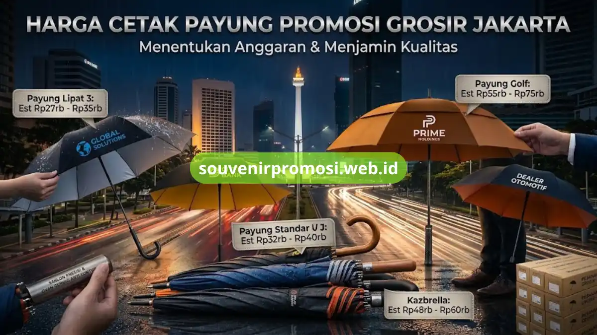

Poin Penting
- Harga cetak payung promosi ditentukan oleh model payung, bahan kain, teknik cetak, dan kuantitas pesanan.
- Payung lipat 3 mulai Rp27.000/unit, payung golf eksklusif hingga Rp75.000/unit untuk minimal 100 pcs.
- Kain dengan silver coating UV lebih tahan panas dan memperkuat ketahanan warna sablon.
- Payung golf cocok untuk hadiah VIP selektif, payung lipat lebih ekonomis untuk distribusi massal.
- Sablon di Souvenir Promosi melalui proses oven curing sehingga tahan air dan anti luntur.
Daftar Isi
Bagi purchasing manager maupun tim marketing, menentukan anggaran cetak payung promosi seringkali membingungkan. Rentang harga di pasaran bisa sangat lebar, dan tanpa pemahaman yang tepat mengenai komponen biaya, keputusan pembelian rawan meleset dari ekspektasi — entah karena kualitas bahan yang ternyata di bawah standar, atau logo yang cepat luntur setelah beberapa kali terkena hujan.
Artikel ini disusun untuk membedah setiap faktor yang membentuk harga cetak payung promosi, sehingga keputusan anggaran bisa diambil berdasarkan data, bukan tebakan.
Menakar Nilai Investasi Cetak Payung Custom untuk Promosi Bisnis
Payung promosi bukan sekadar merchandise pelengkap. Dibandingkan souvenir lain seperti pulpen atau notes, payung memiliki durasi pemakaian yang jauh lebih panjang dan visibilitas brand yang tinggi — logo perusahaan terlihat jelas setiap kali payung dibuka, baik di tengah keramaian kota maupun saat digunakan pengguna dalam aktivitas sehari-hari. Karena faktor eksposur inilah, investasi pada payung berkualitas sepadan dengan hasil brand awareness yang didapat.
Namun, nilai investasi ini hanya terealisasi jika kualitas produk terjaga. Payung dengan rangka rapuh atau sablon yang mudah pudar justru bisa merusak citra brand alih-alih memperkuatnya. Oleh karena itu, memahami rincian harga bukan semata soal mencari yang termurah, melainkan menemukan titik keseimbangan antara anggaran dan daya tahan produk dalam jangka panjang.
Faktor Utama yang Mempengaruhi Perbedaan Harga Cetak Payung Promosi
Ada empat variabel utama yang menentukan mengapa harga cetak payung promosi bisa berbeda jauh antara satu penawaran dengan penawaran lainnya.
1. Jenis dan Model Payung (Payung Golf, Lipat, Standar)
Model payung adalah faktor pertama yang paling mempengaruhi struktur biaya. Payung lipat 3 umumnya menjadi pilihan paling ekonomis karena ukurannya yang ringkas dan proses produksi yang lebih sederhana, cocok untuk pembagian massal di event atau sebagai hadiah retail. Payung standar dengan gagang panjang model J memberikan kesan lebih elegan dan sering dipilih untuk merchandise hotel atau perbankan. Sementara payung golf, dengan diameter kanopi yang jauh lebih besar dan rangka yang didesain tahan angin, ditujukan untuk kebutuhan corporate gift kelas premium dengan harga yang proporsional lebih tinggi.

2. Kualitas Bahan Kain (Nylon Polyester vs Silver Coating UV)
Perbedaan bahan kain berkontribusi signifikan terhadap harga akhir. Kain nylon polyester standar cukup tahan air namun daya tahan terhadap sinar UV terbatas. Sementara kain dengan lapisan silver coating UV memberikan perlindungan ganda: menahan panas matahari sekaligus memperkuat ketahanan warna sablon dari paparan sinar matahari langsung. Bahan dengan lapisan tambahan ini biasanya membuat harga per unit naik, tetapi sepadan untuk penggunaan luar ruangan intensif.
3. Teknik Cetak Logo (Sablon Manual Presisi vs Digital Printing)
Teknik pencetakan logo turut menentukan biaya sekaligus kualitas akhir. Sablon manual presisi umumnya digunakan untuk logo dengan jumlah warna terbatas namun membutuhkan hasil yang tajam dan tahan lama, sedangkan digital printing lebih cocok untuk desain full color dengan gradasi kompleks. Pemilihan teknik yang tepat sesuai kompleksitas logo brand akan mempengaruhi baik hasil visual maupun estimasi anggaran akhir.
4. Kuantitas Pemesanan (Semakin Banyak, Harga Unit Semakin Murah)
Sebagaimana pola umum dalam grosir payung promosi custom, harga per unit akan menurun signifikan seiring bertambahnya volume pesanan. Pemesanan di bawah 100 pcs biasanya dikenakan biaya setup produksi yang lebih tinggi secara proporsional, sementara pemesanan ribuan unit memungkinkan efisiensi biaya bahan baku dan tenaga kerja yang berdampak langsung pada penurunan harga satuan.
Estimasi Tabel Daftar Harga Cetak Payung Promosi Jakarta
Berikut estimasi tabel skema tarif grosir yang umum berlaku untuk pemesanan minimal 100 pcs di wilayah Jakarta:
| Model Payung | Spesifikasi Rangka & Kain | Estimasi Harga Grosir (Min 100 Pcs) | Rekomendasi Penggunaan |
|---|---|---|---|
| Payung Lipat 3 Custom | Rangka besi hitam, kain nylon lapis UV | Rp27.000 - Rp35.000 / unit | Souvenir retail, hadiah event massal |
| Payung Standar Gagang J | Rangka semi-fiber, kain polyester tebal | Rp32.000 - Rp40.000 / unit | Merchandise hotel, suvenir bank |
| Payung Golf Eksklusif | Rangka serat fiber anti-angin, gagang busa | Rp55.000 - Rp75.000 / unit | Event corporate premium, hadiah VIP |
| Payung Terbalik (Kazbrella) | Double layer, rangka fiber fleksibel | Rp48.000 - Rp60.000 / unit | Gift otomotif, merchandise dealer |
Perlu dicatat bahwa estimasi di atas bersifat indikatif — harga final tetap bergantung pada kompleksitas desain logo, jumlah titik sablon, serta negosiasi volume pemesanan aktual.
Perbedaan Payung Golf vs Payung Lipat Promosi: Mana yang Lebih Untung?
Pertanyaan payung golf vs payung lipat promosi sering muncul saat tim purchasing menyusun RAB. Jawabannya bergantung pada tujuan penggunaan. Payung lipat unggul dari sisi efisiensi biaya per unit dan kepraktisan distribusi massal — cocok untuk dibagikan ke ratusan atau ribuan penerima dalam satu event. Sebaliknya, payung golf lebih tepat digunakan sebagai hadiah selektif untuk klien VIP atau mitra strategis, karena ukurannya yang besar dan kesan eksklusif yang dibawanya sepadan dengan harga yang lebih tinggi.
Dengan kata lain, "lebih untung" bukan soal harga termurah, melainkan soal kesesuaian model payung dengan target penerima dan tujuan campaign promosi itu sendiri.
Jaminan Kualitas Sablon Anti Luntur dari Souvenir Promosi
Kekhawatiran terbesar pembeli payung promosi biasanya soal logo yang cepat luntur setelah beberapa kali terkena air hujan. Untuk mengatasi hal ini, proses sablon di Souvenir Promosi menggunakan tinta berkualitas tinggi yang melalui tahap oven curing, yaitu proses pemanggangan pada suhu terkontrol yang membuat tinta menyatu kuat dengan serat kain. Hasilnya, logo yang tercetak tahan air, anti luntur, dan tidak mudah mengelupas meski payung digunakan berulang kali dalam kondisi hujan maupun panas terik.
Berlokasi di Jakarta, Souvenir Promosi telah memproduksi lebih dari puluhan ribu unit payung promosi untuk berbagai brand ternama lintas industri, dengan jaminan garansi sablon 100% presisi pada setiap batch produksi. Sebagai vendor payung promosi Jakarta yang berpengalaman, tim produksi memastikan setiap tahap — mulai dari pemilihan bahan, proses cetak, hingga quality control akhir — dijalankan dengan standar yang konsisten agar hasil akhir sesuai spesifikasi yang disepakati di awal.
Kesimpulan
Menentukan harga cetak payung promosi yang tepat membutuhkan pemahaman menyeluruh terhadap model payung, kualitas bahan, teknik cetak, hingga volume pemesanan — bukan sekadar membandingkan angka termurah dari beberapa penawaran.
Dengan rincian biaya yang transparan dan jaminan kualitas sablon anti luntur, tim purchasing dapat menyusun anggaran secara realistis tanpa risiko overbudget maupun kekecewaan pada hasil akhir produk. Konsultasikan kebutuhan payung promosi Anda sekarang di https://souvenirpromosi.web.id/.